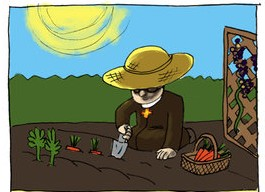

Una introducción a la herencia
Algunas vez te haz preguntado ¿por qué hay individuos que son muy parecidos entre sí? Tal vez este parecido es más evidente entre miembros de una misma familia. Por ejemplo, dos hermanos pueden compartir un color de cabello poco común (color rojo) o estar predispuestos a un trastorno o a una enfermedad. Estos caracteres pueden tener una base genética, lo que significa que dependen de la información genética que el individuo hereda de sus padres.
Sabiendo esto, ¿es posible descubrir cómo se transmite la información genética entre generaciones? Este escrito trata sobre los principios de la herencia, o cómo se transmiten los genes a lo largo de las generaciones.
El monje en el jardín: Gregor Johann Mendel
Los principios de la herencia fueron expuestos por primera vez por un monje del siglo XIX llamado Gregor Mendel. Conocido como el padre de la genética, Mendel fue un maestro, aprendiz de por vida, científico y un hombre de fe.
En las huertas del monasterio donde residia (La abadía de Santo Tomás de Brno), llevo a cabo sus famosos experimientos con guisantes que le llevaron a proponer tiempo después lo que se conoceria como las leyes de la herencia de Mendel. Precisamente, el éxito de Mendel se debe a la elección de la planta de guisantes (Pisum sativum) como sujeto experimental.

Si bien Mendel probó con otros organismos como ratones, abejas y plantas, eligió a los guisantes como su principal sistema modelo debido a las ventajas que estos ofrecian para la investigación genética. Eran faciles de cultivar, y Mendel disponia tanto del jardín como del invernadero del monasterio. Los guisantes crecen relativamente rápido, completando una generación completa en una sola temporada de crecimiento.
El logro de Mendel se puede atribuir también a los siete caracteres que eligió para su estudio. Evitó características que muestran un rango de variación; en cambio, centró su atención en las que existen en dos formas fácilmente diferenciadas, como el color de la flor blanca versus las violetas, las semillas redondas versus arrugadas y las vainas infladas versus las comprimidas.

Finalmente, Mendel tuvo éxito porque adoptó un enfoque experimental: formuló hipótesis basadas en sus observaciones iniciales y luego realizó cruces adicionales para probar sus hipótesis. Mantuvo registros cuidadosos de los números de progenie que poseen cada tipo de carácter y proporciones calculadas de los diferentes tipos. Prestó mucha atención a los detalles, fue paciente y minucioso, realizando sus experimentos durante 10 años antes de intentar escribir sus resultados.
Investigación sobre la herencia
Antes de examinar los cruces de Mendel y las conclusiones que sacó de ellos, será útil revisar algunos términos comúnmente utilizados en genética:
Carácter
La palabra carácter significa una propiedad específica de un organismo; los genetistas usan este término como sinónimo de característica o rasgo.
Gen
En el contexto de cruces genéticos, se define un gen como un factor heredado que determina un carácter.
Alelo
Una de dos o más formas alternativas de un gen. Por ejemplo, en los cruces de Mendel, el color de la flor fue determinada por un gen que existe como dos alelos diferentes.
Locus
Lugar específico en un cromosoma ocupado por un alelo. Por lo tanto, hay un lugar específico, un locus, en un cromosoma en las plantas de guisantes donde se determina el color de la flor.
Genotipo
El genotipo es el conjunto de alelos que posee un organismo individual. Un organismo diploide que posee dos alelos idénticos es homocigoto. Uno que posee dos alelos distintos es heterocigoto.
Fenotipo
El fenotipo es la manifestación o aparición de una característica. Un fenotipo puede referirse a cualquier tipo de característica: física, fisiológica, bioquímica o conductual.
Tambíen observe la siguiente figura y su interpretación:
El circulo superior a la izquierda simboliza el ciclo de vida de un organismo (aquí, los guisantes) de acuerdo con la teoría unigamética de la fecundación. Los individuos adultos, producen gametos femeninos (ovogénesis) y gametos masculinos (gametogénesis). Luego mediante la fecundación, ocurre la unión de los gametos (proceso conocido como singamia), dando lugar al cigoto. La ontogénesis representa el desarrollo de un cigoto en un individuo adulto. Luego a cada individuo adulto se asocia un fenotipo, en términos de las características heredables que presenta. En la parte inferior se presenta las características mendelianas.

El lado derecho de la figura, postula los factores causales de las características (genes alelos). Análogamente a las características, los genes se agrupan según sus diferentes tipos. A continuación, se toma un gen de cada tipo, y se repite esta operación, así, un genotipo diploide consta de un par de mosaico de genes, cada mosaico tiene un gen de cada tipo. Si para un determinado tipo de gen, ambos mosaicos poseen el mismo alelo, se esta ante un genotipo diploide homocigoto para ese tipo de gen. Si por el contrario, los mosaicos tienen alelos distintos, se trata de un heterocigoto.
La segregación y la recombinación constituyen la parte central del cálculo de la genética mendeliana. La primera indica cómo se obtiene un conjunto de genotipos haploides a partir de un genotipo diploide. La regla es sencilla, un genotipo diploide genera tantos genotipos haploides como posibles sean las combinaciones que se pueden formar tomando un alelo de cada uno de los tipos de genes que lo conforman. La recombinación indica cómo obtener genotipos diploides a partir de dos genotipos haploides: basta la unión de ambos (en la fecundación, cada gameto aporta un genotipo haploide, y su unión (singamia) da lugar al genotipo diploide del cigoto).
Durante la formación de los gametos, los alelos se separan (se segregan), por tanto los gametos (ya sean femeninos o masculinos) portan genotipos haploides. En la fecundación, la unión de los gametos produce nuevamente genotipos diploides cuyos alelos se mantienen juntos hasta la formación de los nuevos gametos en el adulto. Así los cigotos portan genotipos diploides.
- Cruces monohíbridos
Mendel inició sus experimentos estudiando cruces monohíbridos. Esto es, eligió dos plantas de guisantes que diferían en una sola característica. Cruzó una planta de guisantes homocigota para el color de la flor blanca con una que era homocigota para el color violeta, en lo que denomino como generación parental (P). Al observar la descendencia resultante del cruce en la primera generación filial (F1), Mendel descubrió que se expresaba solo uno de los fenotipos presentes en la generación parental: todas las flores eran de color blanco. Mendel también realizó cruces recíprocos obteniendo el mismo resultado: en la primera generación filial todas las flores eran de color blanco.

Los factores genéticos (alelos) que Mendel descubrió son, por convención, designados con letras; el alelo para el color de la flor blanco está representado por A, y el alelo para el color violeta por a. Las plantas en la generación parental poseían dos alelos idénticos: AA en el “padre” de color de flor blanco y aa en la “madre” de color de flor violeta.
Mendel repitió los cruces con otras plantas de guisante que diferían en otros caracteres. Sorprendentemente, encontró patrones muy similares de herencia: se producía un carácter de los dos en la primera generación filial. A la caracterítica que aparecía la llamó carácter dominante y a la que no, carácter recesivo.
Una vez que Mendel examinó las plantas de la primera generación filial, las dejó autofecundarse naturalmente, lo cual produjo muchas semillas. Luego recogió y cultivó las semillas resultantes para producir lo que denominó como segunda generación filiar (F2). Al examinar cuidadosamente las plantas, Mendel noto que el número de plantas con flor de color blanco y violeta constituían aproximadamente una proporción de 3 a 1.

A partir de esta experiencia, Mendel formuló las dos primeras leyes.